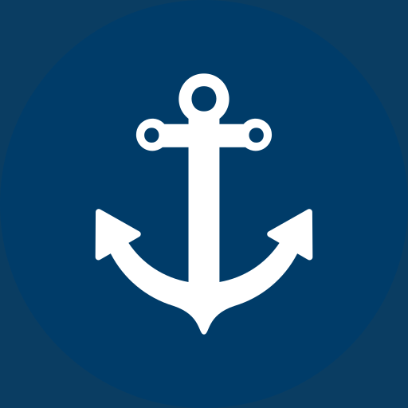

Denizcilik Terimleri Sözlüğü
Türkçe–İngilizce Denizcilik Referansı


Türkçe–İngilizce Denizcilik Referansı
Binlerce Türkçe–İngilizce denizcilik terimi; arama ve filtreleme desteğiyle hızla bulun.
Uluslararası denizcilik sancakları ve filamaları görsel rehberle kolayca tanıyın.
En çok kullanılan denizcilik düğümlerini adım adım açıklamalarıyla öğrenin.
İnternet bağlantısı olmadan da tüm içeriğe erişin; denizde veya limanda fark etmez.
Reklamları kaldırın ve tüm içeriğe sınırsız erişin.